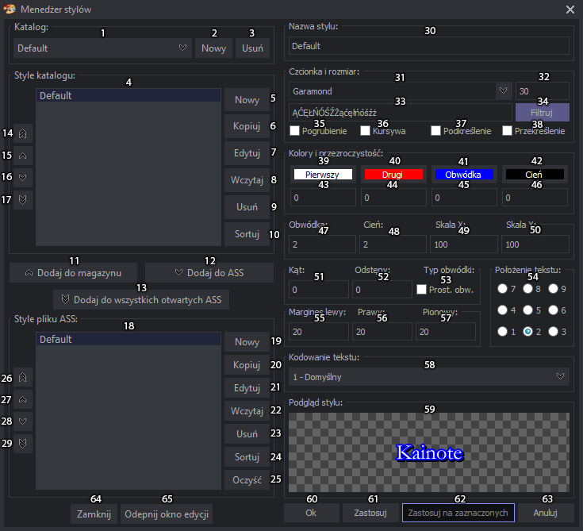

Edycja stylów
Edycja stylów
Edycję stylów połączyłem z oknem menedżera i odblokowałem działanie programu, gdy menedżer jest włączony, dodając przy tym dodatkowe możliwości.

- Lista katalogów stylów, po wybraniu wyświetlają się style wybranego katalogu na liście poniżej (4).
- Tworzy nowy katalog stylów, którego nazwę wybieramy po kliknięciu na przycisk.
- Usuwanie katalogów stylów.
- Lista stylów katalogu, po dwukrotnym kliknięciu na styl możemy go zedytować w polu edycji po prawej stronie. Kolejność stylów zmieniać można przytrzymując alt i przeciągając zaznaczone style w górę bądź w dół.
- Tworzy nowy styl katalogu i otwiera pole jego edycji. Dopiero po wciśnięciu przycisku Ok (60) bądź Zastosuj (61) jest on dodawany na listę.
- Kopiuje zaznaczony styl katalogu i otwiera pole edycji. Dopiero po wciśnięciu przycisku Ok (60) bądź Zastosuj (61) jest on dodawany na listę.
- Włącza edycję stylu magazynu. To samo, co dwukrotne kliknięcie na styl, tyle że można od razu zaznaczyć więcej stylów, by rozpocząć edycję wielu stylów.
- Wczytuje wybrane style z dowolnego pliku ASS, pojawia się okno, gdzie możemy zahaczyć style, które mają zostać dodane na listę katalogu, zatwierdzenie Ok, dodaje je na tę listę.
- Usuwa wszystkie zaznaczone style katalogu.
- Sortuje style katalogu alfabetycznie.
- Dodaje zaznaczone style pliku ASS do katalogu.
- Dodaje zaznaczone style katalogu do pliku ASS.
- Dodaje zaznaczone style do wszystkich otwartych zakładek, nie zmieniając aktywnej zakładki.
- Przenosi wszystkie zaznaczone style magazynu na początek listy.
- Przenosi wszystkie zaznaczone style magazynu o jedną pozycję do góry.
- Przenosi wszystkie zaznaczone style magazynu o jedną pozycję w dół.
- Przenosi wszystkie zaznaczone style magazynu na koniec listy.
- Style pliku ASS, zmiana zakładki wczytuje style aktualnej zakładki zaznaczając styl aktywnej linii. Dwukrotne kliknięcie na stylu otwiera pole edycji. Kolejność stylów zmieniać można przytrzymując alt i przeciągając zaznaczone style w górę bądź w dół.
- Tworzy nowy styl pliku ASS i otwiera pole jego edycji. Dopiero po wciśnięciu przycisku Ok (60) bądź Zastosuj (61) jest on dodawany na listę.
- Kopiuje zaznaczony styl pliku ASS i otwiera pole edycji. Dopiero po wciśnięciu przycisku Ok (60) bądź Zastosuj (61) jest on dodawany na listę.
- Włącza edycję stylu pliku ASS. To samo, co dwukrotne kliknięcie na styl, tyle że można od razu zaznaczyć więcej stylów, by rozpocząć edycję wielu stylów.
- Wczytuje wybrane style z dowolnego pliku ASS, pojawia się okno, gdzie możemy zahaczyć style, które mają zostać dodane na listę stylów pliku ASS, zatwierdzenie Ok, dodaje je na tę listę.
- Usuwa wszystkie zaznaczone style pliku ASS.
- Sortuje style pliku ASS alfabetycznie.
- Czyszczenie stylów, czyli usuwa wszystkie style z kontenera, które są nieużywane w skrypcie napisów.
- Przenosi wszystkie zaznaczone style napisów na początek listy.
- Przenosi wszystkie zaznaczone style napisów o jedną pozycję do góry.
- Przenosi wszystkie zaznaczone style napisów o jedną pozycję w dół.
- Przenosi wszystkie zaznaczone style napisów na koniec listy.
- Nazwa stylu, w której nie należy używać przecinków, jest to ograniczone budową pliku ASS.
- Czcionka stylu. Od tego pola wszystkie zmiany automatycznie widać na podglądzie stylu (59).
- Rozmiar czcionki, może też zawierać liczby po przecinku, dodałem taką możliwość, bo xy-Vsfilter na to zezwala.
- Znaki filtrowania czcionek. Po wpisaniu znaków i wciśnięciu filtruj na liście zostają tylko czcionki, które zawierają znaki wpisane w pole tekstowe. Na nieszczęście jest sporo czcionek, które znaki zawierają ale są puste, przez co filtrowanie nie daje 100% wyniku.
- Przycisk filtrowania, po wciśnięciu rozpoczyna się filtrowanie czcionek, które może potrwać nawet z 2 minuty. Wszystko zależy od dysku i ilości czcionek. Na SSD idzie to najszybciej, kilkanaście sekund. UWAGA! Po wciśnięciu przycisku zapamiętuje jego położenie, więc po następnym uruchomieniu czcionki znów zostaną przefiltrowane i menedżer stylów będzie się uruchamiał o wiele dłużej.
- Pogrubia czcionkę.
- Ustawia czcionkę jako kursywę.
- Podkreśla czcionkę.
- Przekreśla czcionkę.
- Kolor czcionki, po kliknięciu w przycisk pojawia się okno wyboru koloru, gdzie możemy sami ustawić kolor albo pobrać go z wideo, przezroczystość też można ustawić, ale okna poniżej zostawiłem głównie w celach informacyjnych, bo na przycisku ciężko przezroczystość wyświetlić.
- Drugi kolor czcionki w przypadku gdy używamy tagów karaoke \k, \K, \kf, \ko, który po "odśpiewaniu" zmienia się na pierwszy kolor czcionki(26). Po kliknięciu w przycisk pojawia się okno wyboru koloru, gdzie możemy sami ustawić kolor albo pobrać go z wideo.
- Kolor obwódki. Po kliknięciu w przycisk pojawia się okno wyboru koloru, gdzie możemy sami ustawić kolor albo pobrać go z wideo.
- Kolor cienia. Po kliknięciu w przycisk pojawia się okno wyboru koloru, gdzie możemy sami ustawić kolor albo pobrać go z wideo.
- Przezroczystość pierwszego koloru czcionki. Wartości od 0 nieprzezroczysty do 255 całkowicie przezroczysty.
- Przezroczystość drugiego koloru czcionki. Wartości od 0 nieprzezroczysty do 255 całkowicie przezroczysty.
- Przezroczystość koloru obwódki. Wartości od 0 nieprzezroczysty do 255 całkowicie przezroczysty.
- Przezroczystość koloru cienia. Wartości od 0 nieprzezroczysty do 255 całkowicie przezroczysty.
- Grubość obwódki, może przyjmować liczby po przecinku.
- Wielkość cienia, może przyjmować liczby po przecinku. Wartość nie powinna być zbyt duża, bo cień wtedy będzie wyglądał jak kopia tekstu wypisana poniżej.
- Skala w poziomie, może przyjmować wartości po przecinku ze względu na to, że xy-Vsfilter na to zezwala.
- Skala w pionie, może przyjmować wartości po przecinku ze względu na to, że xy-Vsfilter na to zezwala.
- Obraca tekst w kierunku wskazówek zegara, przyjmuje wartości w stopniach.
- Odstępy między literami, może przyjmować wartości po przecinku.
- Ustawia prostokątną obwódkę, która niestety nie pokrywa się z tekstem, gdy ustawi się skalę inną niż ta domyślna.
- Położenie tekstu, pozycja przycisków radio oznacza rozmieszczenie tekstu na ekranie.
- Lewy margines stylu, który można zmienić dodatkowo w marginesach linii, wtedy to one będą brane pod uwagę, nie te w stylu.
- Prawy margines stylu.
- Pionowy margines stylu, góra i dół.
- Kodowanie tekstu, zwykle w tym przypadku najlepiej ustawić je jako 1 - Domyśle, bo w przypadku 238 - Europa środkowa część czcionek może być wyświetlana jako czcionka domyślna czyli Arial, w większości przypadków wystarczy kodowanie 0 - ANSI.
- Podgląd stylu, aby zmienić jego tekst wystarczy kliknąć w pole podglądu i u góry pojawi się pole tekstowe, gdzie możemy wpisać treść podglądu, po czym wystarczy kliknąć ponownie w pole podglądu, by zastosować zmiany.
- Zastosowuje zmiany i zamyka pole edycji.
- Zastosowuje zmiany i zostawia pole edycji otwarte. W obu przypadkach zmiany widać od razu na wideo o ile jest wyświetlana linia z edytowanym stylem.
- Przycisk edycji wielu stylów. Sama edycja dokonuje się tylko w polach zedytowanych w otworzonym stylu, reszta pól zostaje nie zmienione. Jest to dobre, gdy np. chcemy zmienić czcionkę i jej rozmiar. Przycisk jest aktywny dopiero po zaznaczeniu więcej niż jednego stylu.
- Zamyka pole edycji bez zastosowywania zmian.
- Zamyka okno menedżera stylów.
- Odpina okno edycji stylu, różni się tym, że jest rozbite na dwie kolumny i ma wielki podgląd pod spodem. Jest to bardzo wygodne przy typessettingu, bo można większe teksty i z większą czcionką zobaczyć. Dodatkowo okno można też rozciągnąć by powiększyć podgląd w razie potrzeby.
Wszystkie pola edycji liczb mają zmianę wartości przy użyciu rolki myszy, bądź przytrzymując prawym przyciskiem i przesuwając w górę(+1) - dół(-1) lub lewo(+10) - prawo(-10) (W porównaniu z Photoshopem wartości zmienia na odwrót).
Created with the Personal Edition of HelpNDoc: Free CHM Help documentation generator